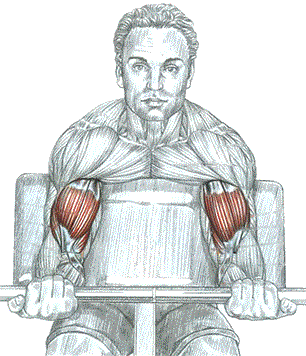

Сгибание рук на скамье "LARRY-SCOTT"

Техника выполнения
Стоя или сидя. Расположить руки на специальной доске "LARRY-SCOTT":
- сделать вдох и согнуть руки, поднимая штангу;
- по окончанию движения сделать выдох.
Это одно из лучших упражнений для локального воздействия на бицепсы.
Внимание: угол наклона скамьи создает значительное напряжение сухожилий рук при их полном выправлении. Во избежание травмы сухожилий, не забывайте разогреть мышцы, использовав предварительно вес средней тяжести.
источник: "Анатомия силовых упражнений." Фредерик Делавье